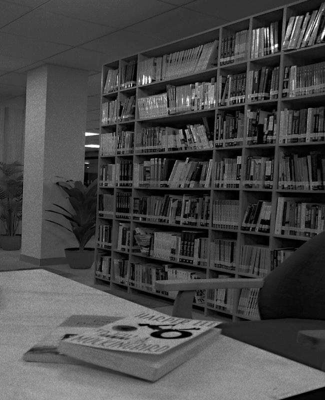
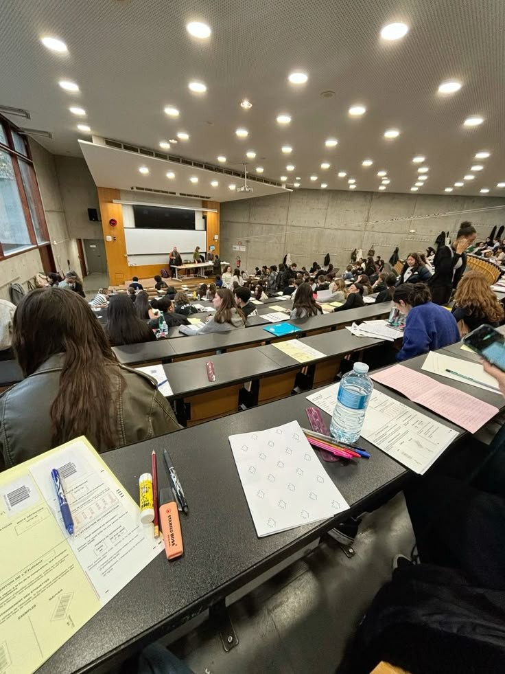
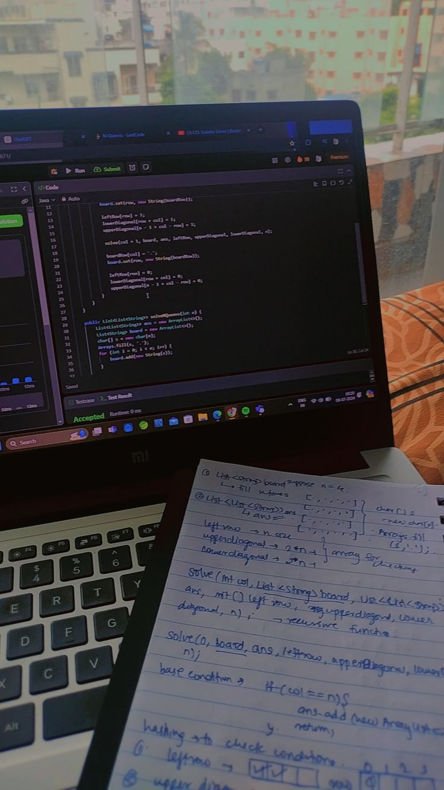

A Day in the Life of an Engineering Student
Last Updated: April 3, 2025
Engineering college life is a rollercoaster ride. From being an excited **first-year student** to a **final-year survivor**, the journey is full of sleepless nights, chai-fueled discussions, project deadlines, and unforgettable memories.
The First Semester: A New Beginning
The first semester is full of energy and excitement. Waking up early, attending all classes, and dreaming big about college life—it’s the honeymoon phase.
Typical First-Year Daily Routine
- **8:00 AM** – Wake up excited, get ready quickly, and rush to the **college mess**.
- **9:00 AM - 1:00 PM** – Classes start. Everything feels new, professors talk about Newton’s laws, and we take down notes sincerely.
- **1:00 PM** – Lunch break! Hanging out with new friends and trying different **canteen food**.
- **2:00 PM - 5:00 PM** – Labs and workshops. The fun part begins—using machines, writing experiments, and pretending to know coding.
- **6:00 PM** – Evening chai and casual sports. **Cricket, football, or just walking around campus**, it's the best part of the day.
- **8:00 PM - 10:00 PM** – Group studies, trying to understand subjects, or just chilling in the hostel.
- **11:00 PM** – **Late-night fun** – movies, music, and random discussions about future plans.
Final Semester: The Reality Check
Fast forward to the final semester—things are different. More assignments, final-year projects, and the reality of placement or higher studies hit hard.



Typical Final-Year Daily Routine
- **9:00 AM** – Wake up late, skip breakfast, rush to the last 5 minutes of class.
- **10:00 AM - 1:00 PM** – Project discussions, **internship work, or last-minute assignments**.
- **1:30 PM** – Lunch break, but everyone is either discussing **placements or coding interviews**.
- **3:00 PM - 6:00 PM** – Either working on the **final-year project** or applying for jobs.
- **7:00 PM** – Last few months with friends, chilling in the **college canteen** or playing games.
- **10:00 PM - 2:00 AM** – Late-night **coding, Netflix, career planning, and nostalgia** about the last four years.
Lessons Learned Over Four Years
- Time management is a myth. **Last-minute preparation works** most of the time.
- College is **not just about marks**; it’s about learning skills and building connections.
- Hostel life teaches **survival skills**—learning to cook, budget money, and survive on Maggi.
- The real value of friends—**the people you struggle with become lifelong buddies**.
Final Thoughts
Engineering life is an **emotional rollercoaster**. You enter with dreams, struggle through challenges, and leave with unforgettable memories and friendships. Whether it’s **first-year excitement or final-year stress**, every moment is worth it.